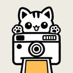
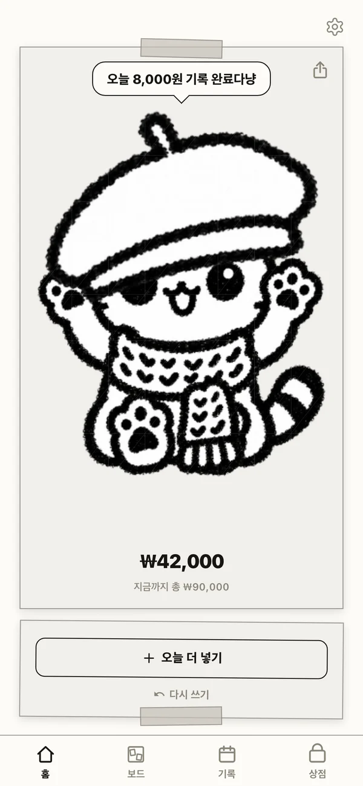
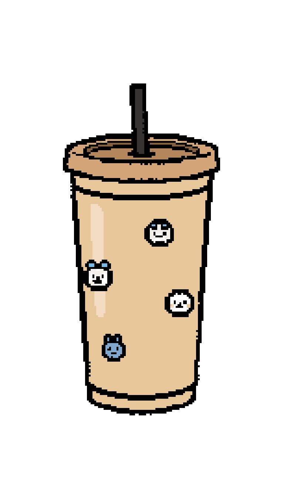
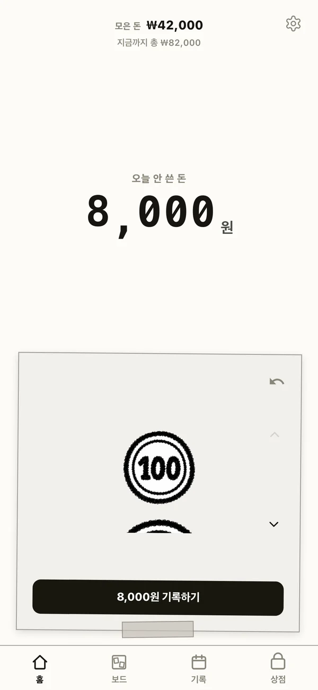
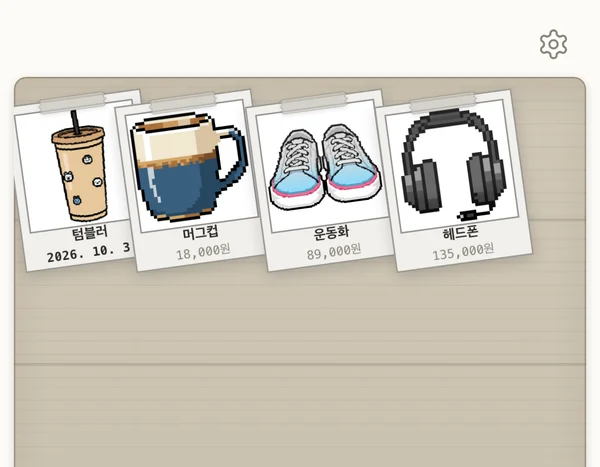
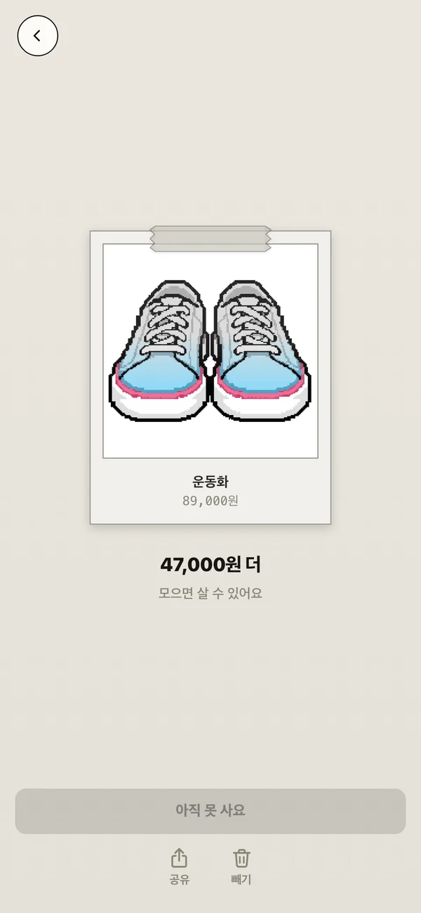
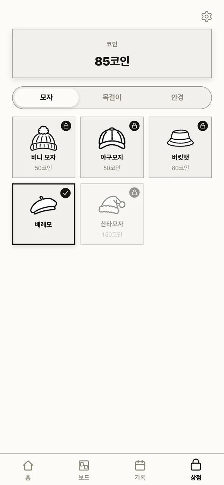
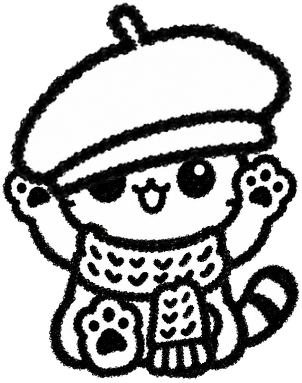
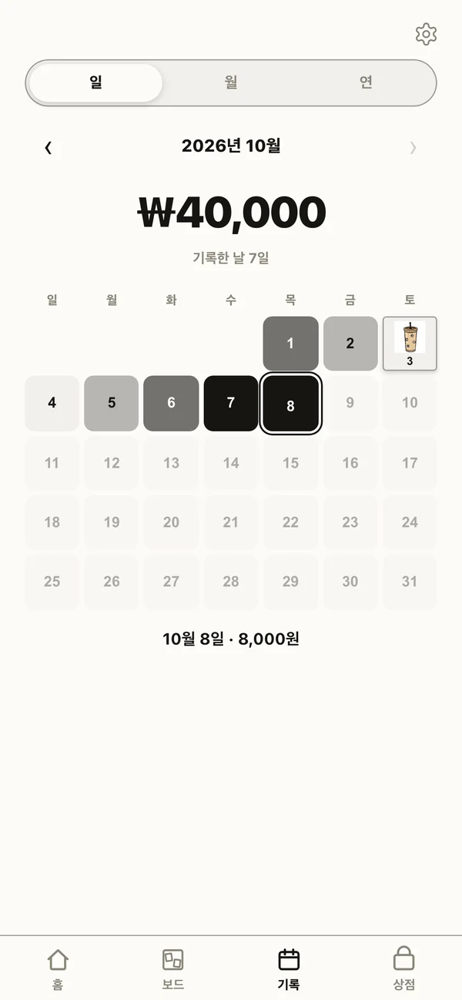

모아냥커피 한 잔, 택시 한 번. 오늘 아낀 돈을 적으면 찍어 둔 물건 사진이 모은 만큼 색으로 차올라요.
App Store 곧 출시

하루 10초면 끝!
오늘 아낀 돈만큼
사진이 물든다냥

오늘 아낀 돈을 동전과 지폐를 눌러 하루 한 번 적어요. 커피든 택시든, 무엇을 아꼈든 상관없어요.
톡톡 누르고 기록!

사진을 찍으면 AI가 픽셀 그림 폴라로이드로 바꿔서 나무 보드에 붙여 줘요. 처음엔 흑백이에요.
내 보드에 착!

기록할수록 사진이 아래에서부터 색으로 차올라요. 얼마 남았는지도 바로 보여요. 다 물들면 살 수 있다는 뜻이에요.
반쯤 왔다!


물건을 사면 코인이 생겨요. 코인으로 고양이에게 모자 · 목걸이 · 안경을 씌워 줘요.
오늘은 베레모

기록 탭에서 날마다 얼마 아꼈는지 한눈에 봐요. 많이 아낀 날일수록 진하게, 물건을 산 날엔 그 사진이 붙어요.
텀블러 산 날!
모자 하나가
물건 하나다냥
모자 · 목걸이 · 안경 15가지. 고양이를 꾸민 만큼 실제로 산 물건이 늘어나요.
모은 돈, 날짜별 기록, 물건 목록은 모두 내 기기에만 저장돼요. 서버에는 보내지 않아서 앱을 삭제하면 기록도 함께 사라져요. 앱을 지우거나 폰을 바꾸기 전에 설정 → 백업 파일 만들기로 파일을 저장해 두면, 그 파일로 언제든 되살릴 수 있어요.
물건 사진을 픽셀 그림으로 바꿀 때 한 장씩 쓰여요. 처음 한 장은 무료이고, 그 뒤로는 필름 팩을 사서 쓸 수 있어요. 변환에 실패하면 필름은 돌아와요.
그대로 남아 있어요. 필름은 아이폰 키체인에 보관된 번호로 관리돼서 다시 설치해도 이어지고, iCloud 키체인을 켜 두면 같은 Apple 계정의 새 아이폰으로도 넘어가요. 결제했는데 필름이 들어오지 않았다면 결제한 날짜와 상품을 적어 메일로 알려 주세요.
픽셀 그림으로 바꾸기 위해 외부 AI 서비스(fal.ai)로 보내지고, 저장되지 않아요. 자세한 내용은 개인정보 처리방침에 있어요.
결제는 Apple이 처리해서 환불도 Apple에 요청해야 해요. reportaproblem.apple.com에서 신청할 수 있어요.